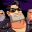

Full ThrottleDetalles
 |
|
| Tiempo de juego | 30s |
| Última actividad | 10/11/2025 18:54:55 |
| Añadido | 10/11/2025 18:54:47 |
| Modificado | 10/12/2025 11:26:44 |
| Estado de finalización | Jugado |
| Librería | Playnite |
| Fuente | |
| Plataforma | PC (Windows) |
| Fecha de lanzamiento | 19/5/1995 |
| Puntuación de la Comunidad | 83 |
| Puntuación de la Crítica | 87 |
| Puntuación de usuario | |
| Género | Adventure Point-and-click Puzzle |
| Desarrollador | LucasArts |
| Editor | Brasoft Produtos de Informática LucasArts Softgold Computerspiele GmbH |
| Característica | Single Player |
| Enlaces | |
| Tag | |
Descripción
F1: Menú
Olvidate de todo lo que sabés de aventuras gráficas. Esto no es para cerebritos, esto es puro rock and roll. Full Throttle es la fantasía rutera definitiva. Es Mad Max con Easy Rider, todo dibujado con la polenta de un cómic zarpado.
Sos Ben Throttle, el líder de la banda de motoqueros "Los Buitres" (The Polecats). Te acusan de un asesinato que no cometiste, te roban la moto y te dejan tirado. Tu misión: limpiar tu nombre y, de paso, salvar el futuro de las motos.
Lo que hizo Tim Schafer acá fue una obra maestra. Es un juego que chorrea onda.
- Cero Puzzles Locos: Esto es directo. La interfaz es un cráneo en llamas. Click derecho y sale el menú: Puño (para golpear), Bota (para patear), Ojos (para mirar) y Boca (para hablar). Simple.
- Un Guion de Hierro: La historia es espectacular. Traición, asfalto y metal. Los personajes (el villano Ripburger, la genia de Maureen) son inolvidables.
- Sonido Nivel Dios: La voz de Ben (Roy Conrad) es la voz más áspera y perfecta de la historia. Y la música... ay, la música. ¡La banda de rock The Gone Jackals grabó un disco entero para este juego!
- "No voy a tocar eso.": Ben no es un pelele. Si le pedís agarrar algo estúpido, te manda a freír churros. Es el protagonista con más huevos que se hizo.
Una aventura corta, furiosa y que te deja con olor a nafta en la ropa. Un 10 absoluto. Nacido para ser salvaje.